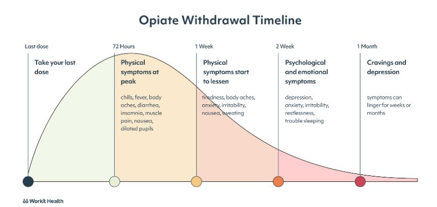
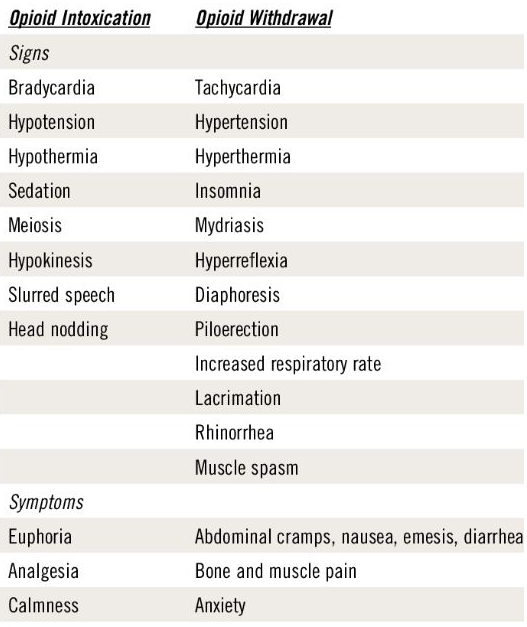

Kappale 17 2010
17.1 Tentti
Lääkehoitopainotteinen tentti, farmakologian osaaminen hyödyksi.
17.1.1 Masennuksen lääkehoito
(Tästä saisi todella pitkän vastauksen tehtyä, jos haluaisi selittää kaikkien masennuslääkeryhmien farmakodynamiikan ja -kinetiikan, yleisimmät sivu- ja haittavaikutukset, niiden soveltuvuuden tiettyihin johto-oireisiin yms. Vastauksessa on nyt vain lyhyesti koottu tärkeimmät asiat eli yleiset periaatteet lääkkeistä, lääkeryhmät, valintaperusteet pähkinänkuoressa, SSRI-lääkkeiden haittavaikutukset, lääkehoidon aloitus ja seuranta, hoidon kesto, toistuva masennus sekä hieman myös lääkeresistentistä masennuksesta ja augmentaatioista. Jos haluaa muistaa itse lääkkeet, niiden vaikutukset ja haittavaikutukset tarkasti, niin SketchyPharm on aina paras paikka opiskella farmakologiaa.)
Masennuslääkkeitä on paljon, mutta valtaosa käytössä olevista masennuslääkkeistä vaikuttaa eri tavoin ennen kaikkea serotoniinin ja/tai noradrenaliinin vaikutuksia tehostavasti tai muokkaavasti. Yleisin niiden vaikutusmekanismeista on serotoniinin takaisinoton esto joko pääasiallisena mekanismina (SSRI-lääkkeet) tai yhdistettynä noradrenaliinin takaisinoton estoon (SNRI-lääkkeet ja trisykliset lääkkeet). Lisäksi niillä on toisistaan poikkeava kirjo erilaisia reseptorivaikutuksia.
Vaikutusmekanismi todennäköisesti perustuu monoamiinien (ja muidenkin välittäjäaineiden) BDNF:ää lisäävään vaikutukseen -> plastisiteetti nousee. Depression neurotrofisen hypoteesin mukaan depressio on mielialan säätelyyn osallistuvien hermoverkkojen sairaustila, jossa hermoverkot harvenevat ja lamaantuvat, kun hermokasvutekijöiden aktiivisuus heikkenee stressin takia. Normaalisti nämä tekijät (esim. BDNF, brain-derived neurotrophic factor) ylläpitävät ja lisäävät neuronien välisten synaptisten yhteyksien syntymistä. Kokeellisen stressin on todettu alentavan hermokasvutekijöiden aktiivisuutta erityisesti aivojen hippokampuksissa ja vähentävän hermosolujen välistä viestintää. Kaikki masennuslääkkeet puolestaan lisäävät hermokasvutekijöiden aktiivisuutta näillä aivoalueilla. Kun harventuneiden ja lamaantuneiden hermoverkkojen solujen väliset yhteydet lisääntyvät ja vahvistuvat, potilas toipuu.
Yleisimmin käytössä olevat masennuslääkkeet ovat SSRIt (selektiiviset serotoniinin takaisinoton estäjät; esim. essitalopraami, fluoksetiini). Muita käytössä olevia lääkeryhmiä ovat SNRIt (duloksetiini, venlafaksiini), trisykliset (esim. amitriptyliini, nortriptyliini, klomipramiini), NRIt (reboksetiini), NDRIt (bupropioni), SARIt (tratsodoni), SAARIt (vortioksetiini), RIMAt (moklobemidi), NaSSAt (mirtatsapiini) ja MT-agonistit (agomelatiini).
Lääkevalmisteen valinnassa on keskeistä valita lääke ns. johto-oireiden mukaan sekä haittojen välttämisen mukaan. Monilla lääkkeillä on siis tiettyjä vaikutuksia, kuten vaikka väsyttävä vaikutus (esim. mirtatsapiini), jolloin sellainen lääke voisi olla paras esim. unettomuudesta kärsivillä potilailla. Jotkut taas ovat pikemminkin stimuloivia (esim. bupropioni), jolloin sellainen olisi paras liikaunisella. Joillain lääkkeillä on kohonnut riski seksuaalihaitoille (esim. SSRI-lääkkeillä impotenssi, anorgasmia), jolloin niitä kannattaa välttää potilailla, joilla jo on näitä ongelmia tai pelkää niitä paljon.
Koska SSRI-lääkkeet ovat selvästi yleisimpiä ensilinjan lääkkeitä, niin käydään nopeasti niiden tärkeimmät haittavaikutukset läpi. Varsinkin hoidon aloitukseen voi liittyä ohimeneviä oireita, jotka useimmilla väistyvät 1–2 viikon kuluessa mutta osalla johtavat lääkkeestä luopumiseen.
Jokseenkin samanlaisia oireita voi esiintyä, kun lääkehoidon lopettaa seinään. Tämän takia pitkäkestoinen SSRI-lääkehoito tulisi lopettaa asteittain viikkojen tai kuukausien kuluessa. Sekä aloitusvaiheessa että lopetusvaiheessa mahdolliset ilmaantuvat haittavaikutukset ovat SNRI-lääkkeillä samankaltaisia kuin SSRI-lääkkeillä.
Tärkeitä pidempiaikaisia haittavaikutuksia ovat mm:
Masennuslääkkeet ja psykoterapiat ovat suunnilleen yhtä tehokkaita lievissä ja keskivaikeissa depressioissa (hoidetaan PTH, vaikeat useimmiten ESH), mutta niiden yhdistelmä on tehokkaampi kuin kumpikaan yksin. Lääkehoito on sitä tärkeämpää, mitä vaikeammasta depressiosta on kysymys. Lievissä tapauksissa pelkkä psykoterapia voi riittää, mutta lääkehoidon aloitus harkitaan tapauskohtaisesti.
SSRI-lääkkeiden vaikutus alkaa yleensä asteittain n. (1-)2-4 viikon kuluessa hoidon aloittamisesta. Ensimmäiset, usein lievät parannukset (kuten unen laadun paraneminen) voivat tuntua jo noin viikon kuluttua, mutta yleensä vasta 2 viikon jälkeen kunnon vaikutukset alkavat ja täysi hoitoteho saavutetaan usein vasta 2–4 viikon, joskus jopa 1–2 kuukauden kohdalla.
Lääkehoidon seurannassa kannattaa tehdä vähintään soitto haitoista 1-2 viikon kuluttua aloituksesta. Tämän jälkeen säännöllisesti 1-3 viikon välein tapaamisin ja tarvittaessa tiiviimminkin. Seurannan aikana arvioidaan saavutettua lääkevastetta. Hoidon tehoa voi arvioida selvittämällä potilaan tilaa arviointiasteikkojen (esim. Montgomery–Åsbergin depressioasteikon) tai kyselylomakkeiden (esim. Beckin depressioasteikon tai PHQ-9:n) avulla. Ellei viitettä alkavasta hoitovasteesta ilmene 4 viikon kuluessa (oirepistemäärän < 20 %:n pieneneminen), on jo yleensä syytä vaihtaa toiseen masennuslääkkeeseen. Jos 4 viikon kontrollissa todetaan osittainen (20-50%) masennuksen lääkehoidon vaste, niin arvioidaan taas 1-3vk välein enintään 12 viikkoon saakka. Mikäli asianmukaisesti annostellulla masennuslääkkeellä ei saavuteta yli 50 %:n hoitovastetta 6–12 viikon aikana, on yleensä syytä lopettaa heikkotehoinen hoito ja vaihtaa lääkettä. Jos kaksi peräkkäistä asianmukaisesti toteutettua lääkehoitoyritystä ei ole johtanut selvään hoitovasteeseen (oirepistemäärän > 50 %:n pieneneminen), kyseessä on niin sanottu lääkeresistentti depressio. Kahden asianmukaisen lääkekokeilun jälkeen tulee pääsääntöisesti konsultoida psykiatria. Konsultaation perusteella voidaan mm. kokeilla depressiolääkkeiden yhtäaikaiskäyttöä tai yhä enemmän suositeltuna ns. augmentaatiota eli masennuslääkkeen rinnalle toisen erilaisen ei-antidepressantin lisäämistä, esim. SSRI + toisen polven psykoosilääke tai litium tai antikonvulantti. Augmentaatioiden ulkopuolella myös mm. ketamiini ja esketamiini ovat yleisesti käytettyjä lääkeresistentin masennuksen hoidossa. Myös mm. sähköhoitoa käytetään.
Masennuksen akuuttivaiheen jälkeen lääkitystä jatketaan tyypillisesti n. puoli vuotta siitä ajankohdasta, jolloin potilas on tullut oireettomaksi. Hoitoannosta ei ole tällä välillä syytä pienentää ilman erityistä syytä. Oireiden uusiutumisen vaara on suuri, jos hoito lopetetaan heti niiden hävitessä. Mahdollisten vierotusoireiden (huimaus, hikoilu, ahdistuneisuus, univaikeudet, pahoinvointi, päänsärky, sensoriset häiriöt) riskin pienentämiseksi lääkkeet lopetetaan yleensä hitaasti muutaman viikon aikana. Jos häiritseviä vieroitusoireita alkaa ilmaantua, on asteittaisessa lopettamisessa syytä edetä hitaammin ja potilaan tilaa seuraten. Lopetettu lääke voidaan tarvittaessa aloittaa pienellä annoksella väliaikaisesti uudelleen ja lopettaa pidemmän ajan kuluessa hyvin pienten annosten kautta.
Masennuslääkehoitoa on syytä jatkaa pitkäaikaisena ylläpitohoitona silloin, kun potilas on elämänsä aikana kärsinyt toistuvista, vähintään keskivaikeista masennustiloista. Ylläpitohoito on suositeltavaa lähes aina, kun kyseessä on kolmas elämänaikainen masennusjakso ja usein jo kahden masennusjakson jälkeen ainakin, mikäli sairausjaksoihin on liittynyt vakavaa itsetuhoisuutta, toimintakyvyttömyyttä tai muuta vakavaa haittaa. Ylläpitohoidon avulla voidaan merkittävästi vähentää masennuksen uudelleen puhkeamisen todennäköisyyttä. Päätöksen ylläpitohoidon aloittamisesta ja lopettamisesta voi tehdä myös yleislääkäri, mutta on suositeltavaa konsultoida siitä psykiatrian erikoislääkäriä. Potilaan oltua oireeton usean vuoden ajan on syytä yksilökohtaisesti harkita lääkehoidon asteittaisen, varovaisen lopettamisen mahdollisuutta. Yhtäjaksoista ylläpitohoitoa on syytä jatkaa sitä pidempään, mitä useampia depressiojaksoja potilaalla on ollut, mitä vaikeampia ne ovat olleet ja mitä suurempi on ollut itsemurhan, työkyvyttömyyden tai muiden vakavien seurausten vaara niiden aikana. Ylläpitohoidon lopettamiseen liittyy uusiutumisen vaara, toisaalta myös ylihoitoa on syytä välttää. Ylläpitohoitoa lopetettaessa potilaan tilaa on seurattava tavanomaista tiiviimmin, jotta mahdollinen depression uusiutuminen havaittaisiin ja hoito voitaisiin aloittaa uudelleen viivytyksettä. Ennen useita vuosia kestäneen masennuslääkehoidon lopettamista sen annosta on suositeltavaa asteittain pienentää muutaman kuukauden aikana vieroitusoireiden minimoimiseksi. Jos häiritseviä vieroitusoireita ilmaantuu, toimitaan kuten jatkohoitovaiheen päättyessä.

17.1.2 Aikuisen ADHD:n lääkehoito
ADHD:n hoidossa käytettävät lääkkeet voidaan jakaa stimulantteihin ja non-stimulantteihin, joista yleisimmässä käytössä ovat:
- Metyylifenidaatti
- Deksamfetamiini
- Lisdeksamfetamiini
- Atomoksetiini
- Guanfasiini
Muilla lääkkeillä ei ole Suomessa virallista käyttöaihetta ADHD:hen; joskus myös bupropionia voidaan käyttää, mutta tällainen kikkailu on ESH:n heiniä. On myös huomioitava, että guanfasiinista ei ole tutkimustietoa aikuisten hoidossa, joten sitä tulee käyttää tarkasti harkiten. Yleisimmin käytetään metyylifenidaattia, atomoksetiinia ja lisdeksamfetamiinia, jotka ovat kaikki mahdollisia ensimmäisiä lääkkeitä ja aikuisilla peruskorvattavuuden anominen ei edellytä metyylifenidaatin kokeilua ensilinjassa (lapsilla ensimmäinen lääke on käytännössä aina metyylifenidaatti). Aikuisillakin ensimmäinen lääke on kuitenkin lähes aina metyylifenidaatti, koska se on korvattavuuden kanssakin selvästi halvin lääke. Jos potilaalla on isosti flyysiä, niin hänelle voi aloittaa lisdeksamfetamiininkin ensilinjassa, koska sen haittavaikutukset ovat usein pienemmät kuin metyylifenidaatin ja sen väärinkäyttöpotentiaali on pienempi. Aikuisen lääkehoito voidaan aloittaa PTH:ssakin, mutta se vaatii aina vähintään erikoislääkärin konsultaation.
Lääkehoito aloitetaan pienellä annoksella, jota suurennetaan 1-2vk välein vastetta ja mahdollisia haittavaikutuksia seuraten; tavoitteena on riittävä teho ilman merkittäviä haittavaikutuksia. Annosta kannattaa nostaa asteittain kohti maksimiannosta, kunnes teho ei enää lisäänny tai haitat estävät annosnoston. Viimeistään 3kk kuluttua tulee arvioida hoidon jatkon soveliaisuutta. Hyvän hoitovasteen saavuttamisen jälkeen lääkehoitoa arvioidaan säännöllisesti yksilöllisen tarpeen mukaan, alussa tiiviisti ja jatkossakin kuitenkin vähintään kerran vuodessa. Lääkehoidon tehon ja tarpeen arvioimiseksi voidaan stimulanttilääkehoidossa pitää lääketauko.
Tarkemmin yleisimmin käytetyistä lääkkeistä:
- Stimulantti, joka estää dopamiinin ja noradrenaliinin takaisinottoa presynaptiseen hermopäätteeseen estämällä DAT- (dopamiinin) ja NAT- (= NET, noradrenaliinin) kuljetusproteiineja.
- Estää myös DAT ja NAT sekä lisäksi lisää dopamiinin vapautumista synapsirakoon monoamiinitransportteriin (VMAT2) vaikuttamalla.
- Deksamfetamiini toimii samalla tavalla, koska lisdeksamfetamiini on vain sen aihiolääke. Lisdeksamfetamiini metaboloidaan aktiiviseksi deksamfetamiiniksi punasolujen kautta ja mahdollistaa hitaamman ja pidemmän vaikutuksen.
Stimulanteilla (metyylifenidaatti/lisdeksamfetamiini/deksamfetamiini) vaste on yleensä heti havaittavissa (noin tunti lääkkeen ottamisesta). Vaikutusaika on 4–14 tuntia valmistekohtaisesti vaihdellen ja valmiste valitaan aina sen mukaan, kuinka pitkä vaikutus halutaan ja milloin vaikutuksen huipun halutaan olevan. Stimulanttilääkitystä käytettäessä lääketauot ovat mahdollisia, mutta oirehallinnan kannalta eivät aina suositeltavia.
- Estää selektiivisesti NAT-kuljetusproteiinia, joka estää noradrenaliinin mutta myös dopamiinin takaisinottoa prefrontaalikorteksilla. Lasketaan non-stimulanttilääkkeeksi ADHD:n hoidossa. NAT-esto saa siis aikaan dopamiinitoiminnan lisääntymisen etuotsalohkossa, muttei aivojuoviossa. Tämän ajatellaan selittävän sen, miksi atomoksetiini on tehokas ADHD:n hoidossa, mutta siltä puuttuu euforisoiva vaikutus ja stimulanttien väärinkäyttöpotentiaali. Useissa hoitosuosituksissa atomoksetiinia pidetään ensisijaisena lääkkeenä, mikäli ADHD-potilaalla on samanaikainen päihdehäiriö.
- Atomoksetiinin teho alkaa useimmiten vähitellen, yleensä 1-3 viikon kuluessa. Yksittäisen annoksen vaikutus alkaa stimulantteja hitaammin ja kestää 24 tuntia. Lääkkeen vaikutus voi tehostua vielä muutamia viikkoja hoitotason saavuttamisen jälkeen. Hoidossa ei suositella lääketaukoja
Haittavaikutukset ovat lasten, nuorten ja aikuisten ADHD:n lyhytkestoisessa hoidossa tavallisia mutta yleensä lieviä. Tavallisimpia haittavaikutuksia varsinkin stimulanteilla (metyylifenidaatti ja amfetamiinijohdokset), mutta myös atomoksetiinilla ovat:
17.1.3 Opiaattivieroitus ja sen hoito
Opioidien käytön tyypillisiä vieroitusoireita ovat mm:
Opidivieroituksen timeline:
- Oksentelu (10-24h)
- Hikoilu, pahoinvointi, nenän vuotaminen, dilatoituneet pupillit, vetistävät silmät (36-48h)
- Ahdistuneisuus, insomnia, paikallistunut kipuilu (48-72h)
- Oireet alkavat lievittää (72h-1vk)
Arvioinnissa voi käyttää tukena COWS-pisteytystä (Clinical Opiate Withdrawal Scale).


Opioidivieroitusoireiden ensisijainen hoito on opioidikorvaushoito. Pelkkä vieroitus hoito on tehotonta -> opioidikorvaushoidon aloitus suositeltavin vaihtoehto! Mahdollisesti on myös opioiditonta vieroitushoitoa (oireenmukainen vieroitushoito), mutta opioidillinen on paljon tehokkaampaa.
Opioidikorvaushoidossa käytetään pääsääntöisesti buprenorfiinia tai (levo)metadonia (vahva opioidi). Buprenorfiini on pitkävaikutteinen partiaalinen opioidiagonisti. Korvaushoidossa esim. Suboxone (Buprenorfiini-Naloksini); tunnetuin nimi pelkälle buprenorfiinille on subutex (kaduilla subu; voidaan siis käyttää huumausaineena). Vieroitusoireiden laukeamisen välttämiseksi induktiohoito buprenofiini-naloksonilla tai pelkällä buprenorfiinilla aloitetaan vasta silloin, kun selkeitä, objektiivisia vieroitusoireita on nähtävissä (buprenorfiini on partiaalinen opioidi -> kilpailee vahojen agonistien kanssa opioidireseptoreista ja voi siten vähentää niiden vaikutusta laukaisten vieroitusoireet)
Opioidikorvaushoitoa toteutetaan osastolla ja todella usein myös avohoitona. Tavallisia aiheita osastoaloitukselle ovat vaikea muu samanaikainen päihdeongelma, tarve samanaikaiselle psykiatrisen tai somaattisen hoidon tehostamiselle tai kaoottinen elämäntilanne. Metadonihoito aloitetaan pääsääntöisesti osastolla riittävän turvallisuuden varmistamiseksi, buprenorfiinihoito voidaan useimmiten aloittaa avohoitona.
Korvaushoidon tärkeimpiä tavoitteita on rikollisuuden väheneminen, infektioriskien minimointi ja psykososiaalinen kuntoutuminen. Huumeseuloja voidaan käyttää hoidon tukena (tällöin usein laajana, jolloin voidaan erotella korvaushoidon positiivisuus muista opioideista).
Korvaushoito on pysyvä tai pitkäaikainen hoito. Hyvässä tasapainossa olevaa korvaushoitoa ei ole syytä lopettaa, ellei asiakas itse sitä halua. Jos asiakas itse haluaa vieroittautua korvaushoidosta, suunnitellaan lopetus ja tukitoimet yksilöllisesti. Ennenaikainen tai liian nopea vieroitus johtaa herkästi opioidien käytön uudelleen aloittamiseen.